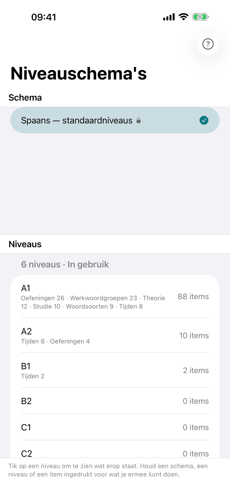
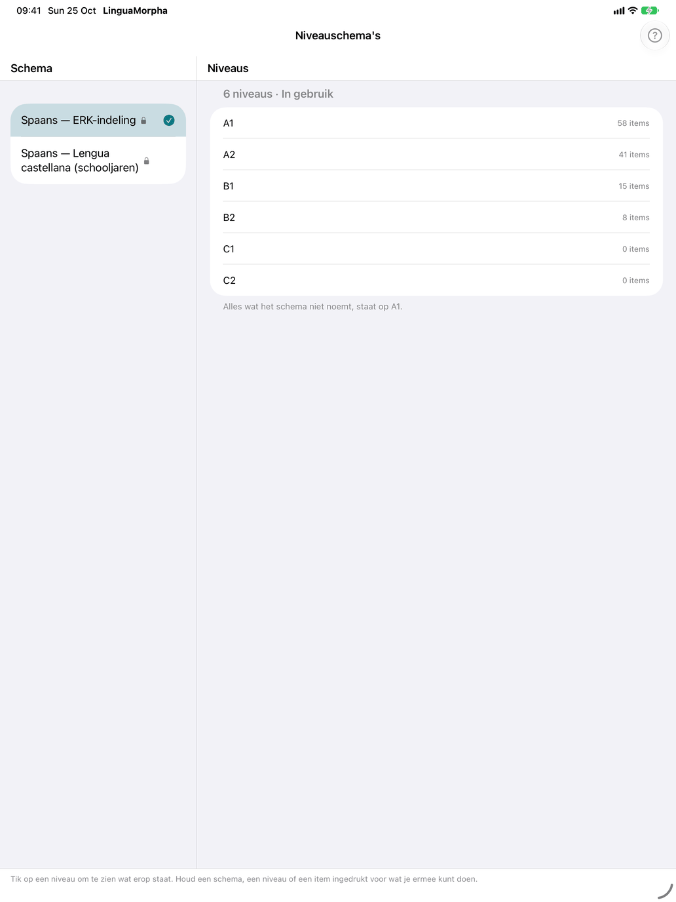
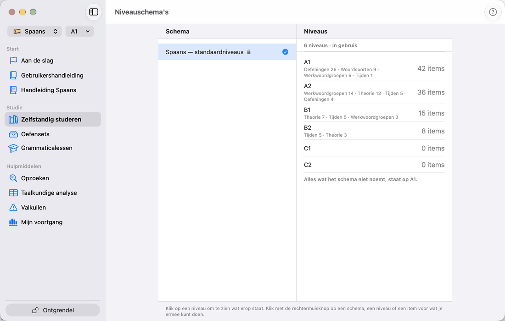

Niveaus



Elke cursus is in niveaus ingedeeld. Een niveauschema bepaalt op welk niveau iets voor het eerst verschijnt — woorden, tijden en de andere grammatica, oefeningen en theorie — en jouw niveau bepaalt hoeveel daarvan je ziet. Niveaus tellen op: op het derde niveau zie je alles van de eerste drie. De standaardschema's van Spaans en Frans noemen hun niveaus naar het ERK, A1 tot en met C2; dat van Latijn heeft zes eigen niveaus.
Jouw niveau
Je huidige niveau, bijvoorbeeld A1, staat in één label samen met de vlag van de cursus en het schema dat in gebruik is: in de werkbalk op iPhone en iPad, bovenaan de zijbalk op de Mac. Een nieuwe installatie begint op het eerste niveau, en een schema dat je nog niet gebruikt hebt ook. Tik of klik op het label voor Schema en niveau (op de Mac een eigen venster). Het heeft drie secties:
- Leerling — wie er studeert; zie Leerlingen hieronder.
- Schema — de cursussen, met een vinkje bij de cursus die je studeert. Tik op een cursus om zijn schema's uit te klappen; kies je een schema van een andere cursus, dan wissel je naar die cursus. Een slotje markeert de schema's van een cursus die je niet hebt ontgrendeld, en die openen de winkel. Tik op het schema dat in gebruik is om zijn niveaus uit te klappen: eerst Alle niveaus — geen niveau: alles wordt getoond, als in een cursus zonder schema, behalve wat het schema weglaat met Niet getoond — en dan de niveaus waar iets begint. Kies er een om te veranderen wat de app toont; het hoogste niveau toont alles wat het schema überhaupt toont.
- Niveau — de drie schakelaars hieronder, alleen op een niveau, niet bij Alle niveaus.
De schakelaars:
- Items indelen — voor je eigen schema: stel terwijl je door de app gaat bij elk item het niveau in waarop het voor het eerst verschijnt (zie Items indelen in de app). Een ingebouwd schema kun je niet wijzigen, dus daar staat dit er niet.
- Niveaus tonen — zet bij elk item een klein label met zijn niveau, alleen ter informatie.
- Alleen nieuw op dit niveau — de betekenisdecks bevatten alleen de woorden die je niveau toevoegt, niet die van de niveaus eronder, en de naslaglijsten openen met alleen wat nieuw is op je niveau. Boven elke lijst schakelt een keuzebalk tussen Nieuw op A2 (n), Tot en met A2 en Alle niveaus, met ook de woorden van hogere niveaus; een keuze zonder inhoud ontbreekt, en zoeken kijkt in alles. Een sterretje naast je niveau laat zien dat dit aan staat.
Van niveau wisselen toont en verbergt; het verwijdert niets. Je antwoorden worden per item bewaard en tellen weer mee als een item terugkomt.
Je niveau geldt voor Zelfstandig studeren: de hubs, oefeningen, naslaglijsten en theorie. Een theoriepagina laat de kaarten boven je niveau weg; Ook latere niveaus bovenaan haalt ze terug, met hun niveau ernaast, en doet hetzelfde voor de tijden op de pagina van een werkwoord. Oefensets volgen het ook: een set waarvan de tijden of de meeste woorden boven je niveau liggen, blijft van de lijst (Ook latere niveaus bovenaan toont ze; het is dezelfde instelling als op de theoriepagina's, en die blijft bewaard), en de woorden van een set worden op zijn pagina tot je niveau ingekort. Grammaticalessen volgen hetzelfde niveau, maar markeren alleen wat erboven ligt: een les boven je niveau is gedimd, en bij een module die er helemaal boven ligt staat Boven dit niveau; elke les blijft open. Bij Alle niveaus ligt er niets boven.
Leerlingen
Meer mensen kunnen op één apparaat studeren, elk als leerling. De sectie Leerling van Schema en niveau toont ze, met een vinkje bij de actieve; tik op een andere om naar die leerling te wisselen. Leerling toevoegen voegt er een toe met een naam. Houd een leerling ingedrukt (rechtsklik op de Mac) voor Hernoem en Verwijder; bij verwijderen zie je hoeveel antwoorden meegaan, en gaat de laatste weg, dan komt er een nieuwe, lege leerling Standaard voor in de plaats. De eerste leerling heet Standaard tot je hem een andere naam geeft.
Elke leerling heeft eigen voortgang, schema en niveau; al het andere, zoals de instellingen, je eigen schema's en de oefensets, is gedeeld. Zodra er meer zijn, toont het label de naam van de actieve leerling voor de vlag. Tijdens een oefening kun je niet van leerling wisselen: rond die eerst af.
Niveauschema's
Open het venster via de rij Niveauschema's in het cursustabblad van Instellingen, die het schema in gebruik toont. Het heeft twee kolommen, op de iPhone onder elkaar:
- Schema — de ingebouwde schema's van de cursus, elk gemarkeerd met een slotje, het standaardschema eerst; daarna je eigen schema's. Een vinkje markeert het schema dat in gebruik is. Een schema selecteren toont de niveaus ervan; het schakelt er niet naar over.
- Niveaus — de niveaus van het geselecteerde schema, elk met hoeveel items er beginnen en van welke soort, en een rij Niet getoond voor wat het schema weglaat. De regel onder de lijst noemt het niveau waar alles staat wat het schema niet noemt.
Elke handeling zit in een menu: klik met de rechtermuisknop op de Mac, houd ingedrukt op iPhone en iPad. De regel onderaan het venster zegt dat ook.
Werken met schema's
Het menu van een schema biedt:
- Gebruiken — maakt het het schema in gebruik.
- Dupliceren… — kopieert het onder een nieuwe naam, met de niveaus en welk item op welk niveau staat; de kopie wordt het schema in gebruik. Zo begin je vanuit een ingebouwd schema.
- Exporteren… — bewaart het schema als bestand, om te houden of aan iemand te geven.
- Overzicht als pdf… — wat er op elk niveau begint, als pdf om te bewaren, te delen of af te drukken.
- Naam wijzigen…, Woorden indelen…, Opties… en Verwijderen… — alleen voor je eigen schema's. Verwijderen… haalt het schema van dit apparaat; exporteer het eerst als je het wilt bewaren.
- Nieuw… en Importeren… — ook op de lege ruimte onder de lijst.
Nieuw… vraagt om een naam, de niveaus, en onder Beginnen met hoe je start: Alles op het eerste niveau, waarna je de items in de app indeelt, of “…” overnemen voor een bestaand schema, waarbij je onder Waar de niveaus heen gaan kiest welk nieuw niveau elk van zijn niveaus wordt.
Importeren… leest een schemabestand. Een bestand voor een andere cursus, een bestand dat niet bij deze cursus past, een te groot bestand of een bestand dat helemaal geen niveaubestand is, wordt geweigerd met een zin die zegt waarom. Heb je het schema al, dan vraagt de app eerst of het bestand het mag vervangen. Na het importeren zegt de app hoeveel niveaus er zijn binnengekomen en wat niet overeenkwam: namen die deze cursus niet kent, worden genegeerd, en woorden die het bestand niet noemt, volgen de woordregel van het schema of staan op het niveau waar alles zonder naam staat.
Een niveau openen
Selecteer een niveau om de items bij naam te zien, gegroepeerd per soort — werkwoorden, zelfstandige naamwoorden, tijden, oefeningen enzovoort. ‹ Niveaus gaat terug. In je eigen schema biedt het menu van een item Verplaatsen naar een ander niveau, of — om het weg te laten; op de Mac selecteer je eerst meer items met ⌘-klik of ⇧-klik.
De niveaus veranderen
In je eigen schema biedt het menu van een niveau Naam wijzigen…, Niveau ervoor invoegen…, Niveau erna invoegen…, Omhoog, Omlaag en Verwijderen…. Een nieuw niveau begint leeg, en een niveau verplaatsen neemt zijn items mee. Een leeg niveau verwijderen haalt het gewoon weg; een niveau met items verwijderen — of het niveau waar alles zonder naam staat — vraagt waar ze heen gaan: naar een ander niveau, of naar —, waar ze op geen enkel niveau getoond worden.
Woorden indelen
Woorden indelen… bij je eigen schema zet hele woordsoorten in één keer op de niveaus. Kies voor Werkwoorden, Zelfstandige naamwoorden, Bijvoeglijke naamwoorden en Bijwoorden:
- Ongewijzigd — laat de woordsoort zoals ze is.
- Op frequentie — de meest frequente woorden op het eerste niveau, en elk volgend niveau de helft meer. De frequentie is gemeten in een corpus van de taal; een woord zonder gemeten waarde wordt ingedeeld volgens zijn frequentieband.
- Alles op het laagste niveau.
- Niet ingedeeld — de woorden van die soort worden op geen enkel niveau getoond.
Elke rij zegt hoeveel woorden de soort heeft en hoe ze nu is ingedeeld. Voorbeeld toont hoeveel woorden van elke soort elk niveau zou krijgen. Toepassen vraagt eerst, want het vervangt wat je voor die woordsoorten met de hand hebt ingedeeld.
De keuze wordt bij het schema bewaard. Woorden die later aan de app worden toegevoegd, volgen haar: een nieuw woord gaat naar het niveau waarvan de woorden even frequent zijn, en geen al ingedeeld woord verschuift.
Schema-opties
Opties… bij je eigen schema bevat de schakelaars die niet over niveaus gaan:
- Vertalingen tonen — uit voor een leerling die de taal al spreekt: de woordenlijsten, de oefeningen en de gidsen tonen geen vertaling. De betekenisoefeningen hebben dan geen zin; verberg die aan de kant Niveaus.
- Namen van de tijden — zoals cursussen voor leerders ze noemen, of zoals de scholen van de taal zelf. Alleen voor een cursus die beide tradities kent. Elke tabel, oefening en gids volgt de keuze.
- App-taal — de app-taal die het schema eenmalig instelt wanneer het wordt gekozen; Laten zoals het is stelt niets in. De leerling kan het daarna wijzigen in Instellingen.
- Ongenoemde items op — het niveau waarop alles staat wat het schema niet noemt: een later toegevoegd woord, een oefening zonder niveau.
De ingebouwde schema's houden hun eigen instellingen; dupliceer er een om ze te wijzigen.
Items indelen in de app
Met Items indelen aan heeft elk item een label met zijn niveau — woordrijen, tijden, oefeningen, theorie, onderwerpen — en items boven je niveau worden gedimd in plaats van verborgen. Tik op een label om het niveau van het item te kiezen: zijn eigen niveau en de niveaus ernaast, Andere niveaus voor de rest, en Niet getoond om het weg te laten. Een potlood naast je niveau herinnert je eraan dat indelen aan staat; zet het uit in Schema en niveau.
Niveau en woordbereik
Het niveau bepaalt wat er in Zelfstandig studeren bestaat. Woordbereik selecteren beperkt dat verder op onderwerp, en de selectierijen van elke hub op groep. Zie Kiezen wat meedoet.